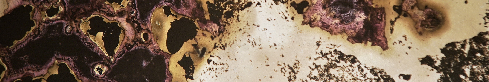

À tout prendre rien plutôt que moitié

Le renard sort du bois
Braquages, années de prison : Pierrot est un banditu de Haute Corse. Ses vols profitent aux siens, qui le protègent en retour lorsqu’il prend le maquis chez lui, entre Balagne et désert des Agriattes.
Julie Agutes sait filmer les mondes fermés. Travelling avant vers les casetta où dormait Pierre Giudicelli, elle fait cinéma de sa cavale. Par son écriture précise, elle nous fait éprouver la force qu’apportent la familiarité des sentiers, la solidarité du sang, le refuge de la nuit et du secret ; la liberté qu’on gagne à vivre de peu dans de grands horizons.
Ce mythe du banditu résistant, c’est du cinéma ! La police est caricaturée comme impuissante, les banques, la prison restent des abstractions lointaines. Lorsqu’elle figure la traque policière à travers une séquence de chasse, la réalisatrice inverse subtilement le regard - et représente ce pouvoir qu’a connu Pierre, à contre-coeur lorsqu’il avait 20 ans dans les Aurès, mais avec un sentiment de légitimité lors de ses braquages : le pouvoir de piller, de tuer… ou d’être tué.
Gaëlle Rilliard
- Expérience du regard
- Jeudi 20 à 21h